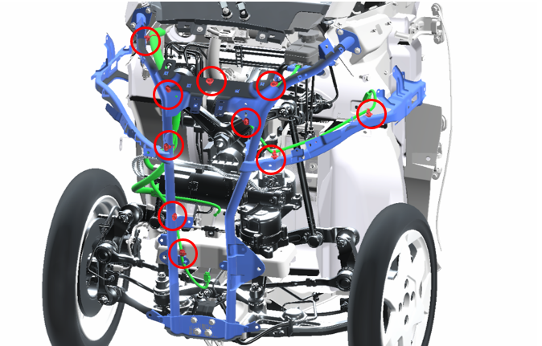
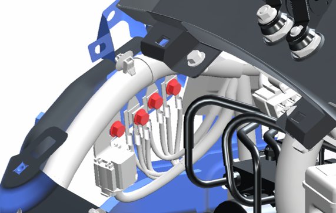
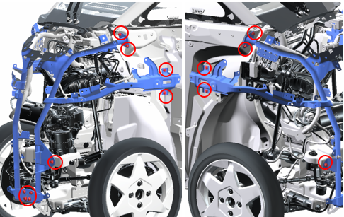
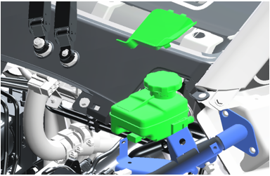
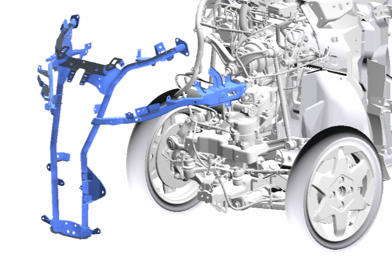
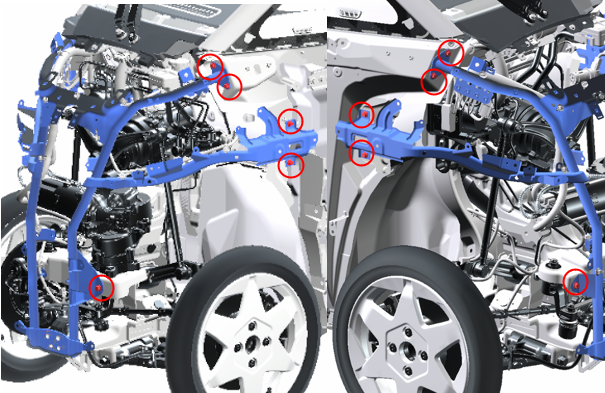

4-5-1 フロントサポート
構成図
|
1 |
SUPPORT ASSY, FRONT (E3210-A1000) |
2 |
TANK PUMP ASSY, WINDSHIELD WASHER (H5310-A1000) |
|
3 |
HEADLAMP ASSY, CTR (H1100-A1010) |
4 |
SPEAKER ASSY, VHECLE APPROACHING SYSTEM (H6610-A1000) |
|
5 |
HORN ASSY, LOW PITCHED (H6510-B1000) |
- |
- |
取り外し前作業
-
COVER, FR COWL取り外し4-1-1 外装(フロント)
-
TANK PUMP ASSY, WINDSHIELD WASHER取り外し10-4-2 ウォッシャータンク
-
LAMP ASSY, FR TURN SIGNAL取り外し10-3-3 ターンシグナル
-
HEADLAMP ASSY, CTR取り外し10-3-1 ヘッドライト
-
SPEAKER ASSY, VHECLE APPROACHING SYSTEM取り外し10-X ビーグルアプローチングスピーカー
-
HORN ASSY, LOW PITCHED取り外し10-X ホーン
取り外し手順

1.ワイヤーハーネス切り離し
-
コネクター、ワイヤーハーネスクランプを切り離す。

-
ボルト４本を取り外す。

2.SUPPORT ASSY, FRONT取り外し
-
ボルト14本を取り外す。

-
ブレーキリザーバータンクを切り離す。

-
SUPPORT ASSY, FRONTを取り外す。
取り付け手順
取り外しと逆の手順で取りつける。

1.SUPPORT ASSY, FRONT取り付け
-
ボルト10本を締め付ける。
-
ボルト4本を締め付ける。
-
ボルト4本を取り付ける。